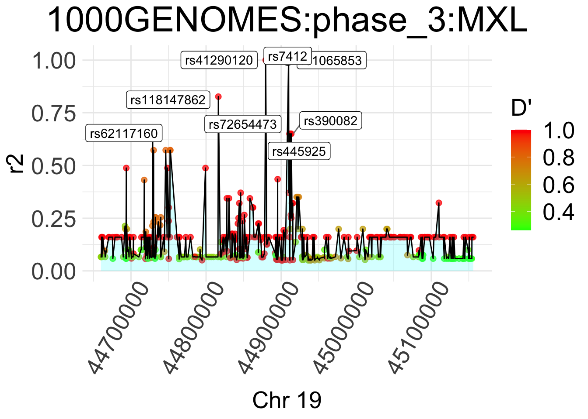

Software
Packages in development:
- seekerBio a R package for gen/SNP search information
seekerBio::seeker_snp_ld_plot("rs7412")## 2019-09-06 16:04:25 Running `seeker_snp_ld` for character## 2019-09-06 16:04:28 Running `seeker_snp_arch` for character## 2019-09-06 16:04:28 Running `seeker_snp_arch` for data.frame## 2019-09-06 16:13:46 Running `seeker_snp_arch` for character
seekerBio::seeker_haploview("rs7412")## 2019-09-06 16:13:50 Running `seeker_snp_ld` for character## 2019-09-06 16:13:52 Running `seeker_snp_arch` for character## 2019-09-06 16:13:54 Running `seeker_snp_ld` for character## 2019-09-06 16:13:54 Running `seeker_snp_ld` for data.frame
- qualitycheck a R package for the organization of lots of pharmaceutical products
- Co-author of mxearthquakes a R package that shows the data of earthquakes in Mexico from 1900 to date.
library(mxearthquakes)
mxearthquakes::ploteq("Veracruz", 2003)